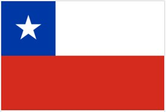
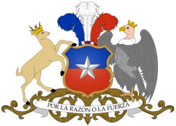
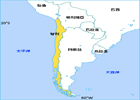

- 智利国旗
- 智利国徽
- 智利标志性建筑
- 智利地理位置
智利概况
智利共和国国徽智利共和国, 面积７５６６２６平方公里。位于南美洲西南部, 安第斯山脉西麓。
人口概况
1609.34万(2004年)。其中城市人口占86.8％。印欧混血种人占75%, 白人20%, 印第安人4.6%。官方语言为西班牙语。在印第安人聚居区使用马普切语。15岁以上人口中信仰天主教的占69.90%, 信仰福音教的占15.14%。
首都:圣地亚哥 (Santiago) , 位于智利中部, 人口６０６万(２００２年)。
智利经济
智利属于中等发展水平国家, 预计在2019年前成为南美洲第一个发达国家。矿业、林业、渔业和农业资源丰富, 是国民经济四大支柱。矿藏、森林和水产资源丰富, 以盛产铜闻名于世, 素称“铜矿之国”。已探明的铜蕴藏量达２亿吨以上, 居世界第一位, 约占世界储藏量的１/３。铜的产量和出口量也均为世界第一。铁蕴藏量约１２亿吨, 煤约５０亿吨。此外, 还有硝石、钼、金、银、铝、锌、碘、石油、天然气等。盛产温带林木, 木质优良, 是拉美第一大林产品出口国。渔业资源丰富, 是世界第五大渔业国。工矿业是智国民经济的命脉。２００１年, 工业总产值为５７２２０.５６亿比索, 矿业总产值３０５０７.２７亿比索。工矿业从业人口为８２.９万人, 占总劳动力的１４％。２００１年, 农、林业产值１５２４３.５１亿比索,农业劳动力７０.４万人, 占总劳动力的１２％。耕地面积１.６６万平方公里。全国森林覆盖面积１５６４.９万公顷, 占全国土地面积的２０.８％。主要林产品为木材、纸浆、纸张等。智利是以经济开放而著称于世的贸易国家。２００３年出口额首次突破２００亿美元大关, 达到２１０．４６亿美元。
外交关系
智利奉行独立自主的多元化务实外交政策。主张尊重国际法, 和平解决争端, 捍卫民主和人权。大力推行全方位的外交战 略, 经济外交色彩浓厚, 对外交往十分活跃。智优先巩固和发展同拉美邻国和南共市国家的关系, 积极推动拉美一体化, 重视与美、欧的传统关系, 积极拓展同亚太国家的关系, 努力实现出口市场多元化。同世界上171个国家建立了外交关系。重视双边自由贸易谈判, 目前智已同绝大多数拉美国家及美国、加拿大、欧盟、韩 国、中国、日本等47个国家签署了16个自由贸易协定。
经贸往来
智利经济在很大程度上依赖对外贸易。出口总额占国内生产总值的30%左右。实行统一的低关税率(2003年起平均关税率为6%)的自由贸易政策。目前同世界上170多个国家和地区有贸易关系。